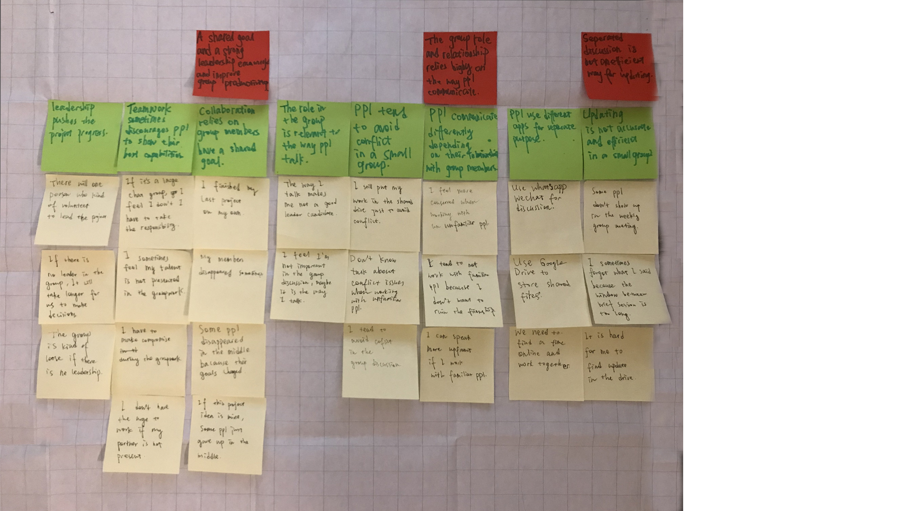
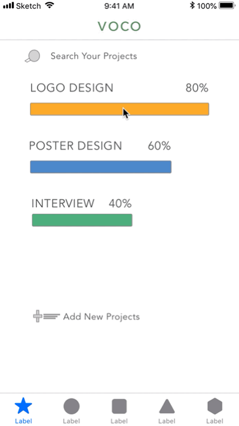
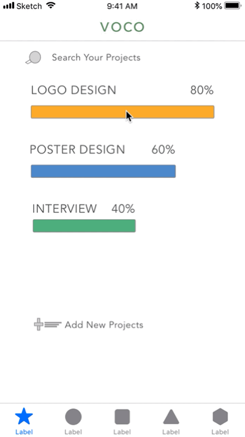
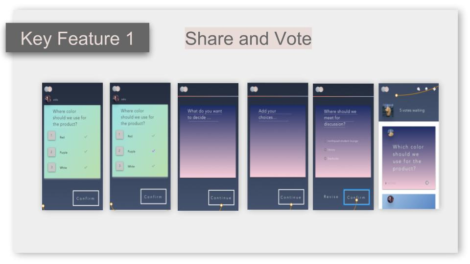
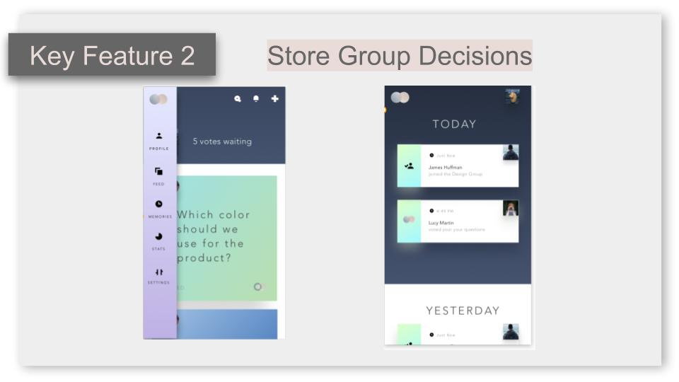
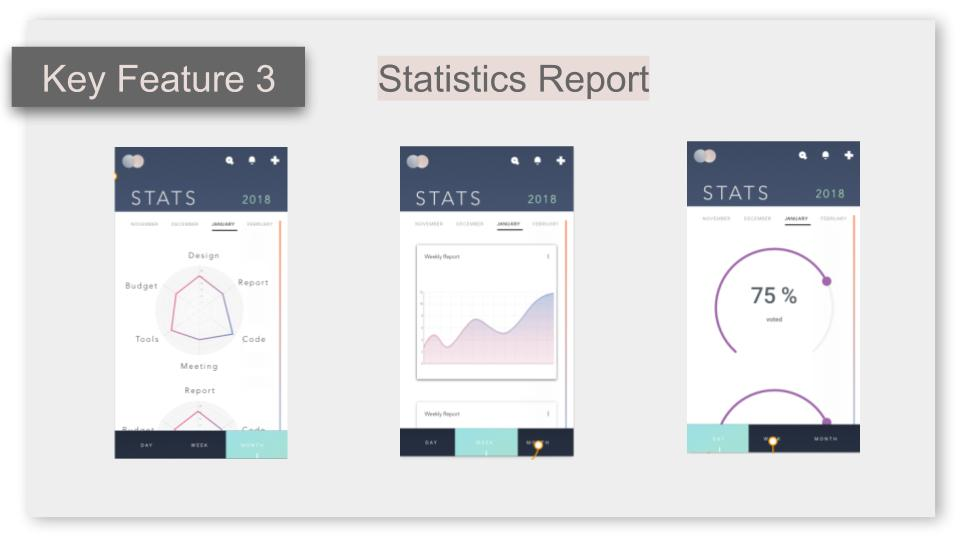
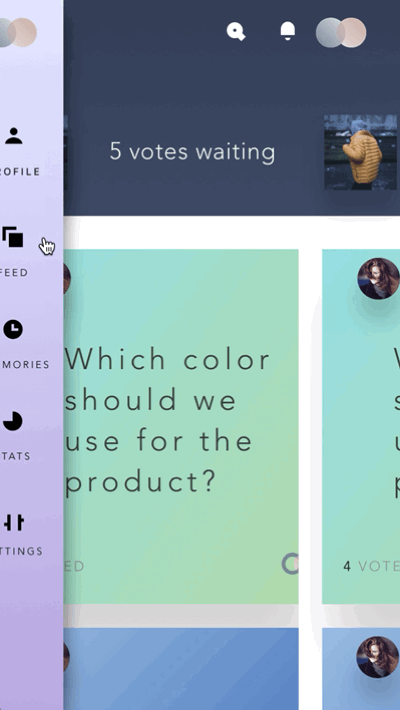

Designning an Inclusice and Engaging Groupwork Experience
The reason I want to focus on this problems is from my personal experience working with teams during undergrad and grad schools. I have had great and bad group work experience and I think, for all of us, group work is a major part of our school life and future work, now and in the future. If we think about out group work experience, I believe we all have many to share. For me, group work is not easy. The first thing is that being a introvert, I tend to think a lot and sometimes miss the window to bring out my ideas. As a result, I sometimes find it is difficult to contribute my thoughts in the group work in the beginning and end up not doing the thing I am passionate about. Also, as an international students, I am not familiar with the group work norms here. One of the norms I find it interesting is that here I basically use different collaborative tools with different teams and we sometimes need to decide on which message app we use; whereas in China, we pretty much use wechat for everything, message app and file sharing, so we basically just skip this part. So, the point is when working with other people, we need time to adjust and understand each other’s background and personality.
Defining the Problem
Group work is not only a problem for us. When putting this is a larger scale, we can see major companies are also working to improving their collaborative experience. How do major companies change group work experience? For example, Amazon is changing their meeting norm by empowering the introverts. To ensure that everyone has a say in the meeting, they don’t talk in the beginning of the meeting. Instead, they spend 6 minutes reading and writing on the memo. In this case, Amazon aims to ensure that everyone’s opinion is expressed and heard. Moreover, company like salesforce is adopting gamification as a way to encourage staff. IDEO is using the space design to changing the work experience. There are many more companies are improving their group work experience from various perspective.
Findings from the Interviews
After I did these primary research, I want to narrow down to a perspective I want to focus on. So, I did some small interviews to understand others’ opinions and experiences on this subject. To summarize, there are three ideas generated from the interviews. First, a shared goal and a strong leadership improves group productivity; Secondly, the role and the relationship in a group relies on group communication; Thirdly, separated discussion is not efficient for group update and decision.
My first protorype and Learning from Mistakes
So to solve the above problem, I just thought maybe it would be better if we could have a platform that have all these three functions. The first prototype I made is generally the integration of google drive, trello and whatsapp. It can manage your group process, store all your files and start a conversation with your co-workers. I still think this is a cool idea, but later on when I work on all the features, I find it difficult to have a easy and simple workflow. Because I am putting so many features together, it needs more steps to achieve users’ goal, and thus as a result it might somehow putting more stress on the group working process. But the major reason tells me to reconsider the feature is that I think that integration of all the features is not the solution for my target users.
 

Starting Again from Target Users
So to solve the above problem, I just thought maybe it would be better if we could have a platform that have all these three functions. The first prototype I made is generally the integration of g To analyze why I failed in the first prototype, I think it can be explained from the characteristics of the student team. First of all, student team do not have designated leaders. At lease for my experience, we don’t really have leaders in all my group projects. We take on task and work by interest and strengths. It is not like in professional context where there is program manager or a boss who assign group work and control the speed. Also, we want to main peer relationship working in student teams. It is common that we want to consider others’ opinions and habits. Thus, we spend so many time waiting for response or achieving on agreement to make sure everyone is happy. Furthermore, we work in a diverse environment and we all come from different background and have different habits. From this perspective we interpret things differently and it is hard to really voice out our ideas and achieve agreements. As a result, we waste time on waiting and deciding and not really have enough time on working.
Decisions help a Team Moving Forward
So now my focus is narrowed down on helping team achieving agreements. Just like in the diction, each time characters makes choices develop the plot, we make decision to move forward the group process and thus boost teamwork productivity. Therefore, this brings out the goal of VOCO. Briefly, It aims to assist the team to make decisions and achieve agreement. Accordingly, everyone can engage in the decision making process. And most importantly, the ultimate goal is to sharing opinions and achieve understanding.
   Takeaway
For this product, it is essentially designing for human-human interaction. Dan saffer----”facilitating communication between human through products” it means that we still needs to think about how the cause of communication and how we do it.
We are designing for everyone.
Inclusive and engaging. Think about how introverted and marginalized people voice their ideas in the workforce.
Inclusives matters.
How can we transform the way we talk about group work?